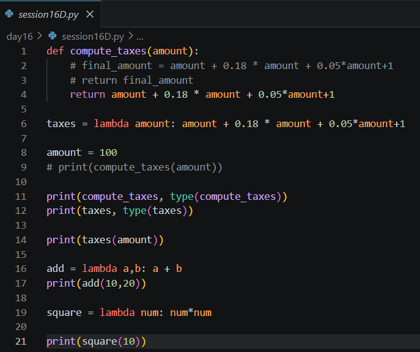
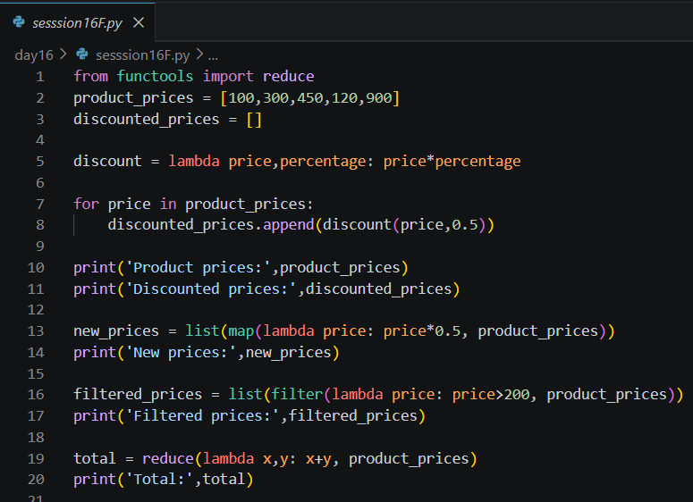
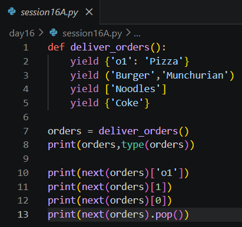
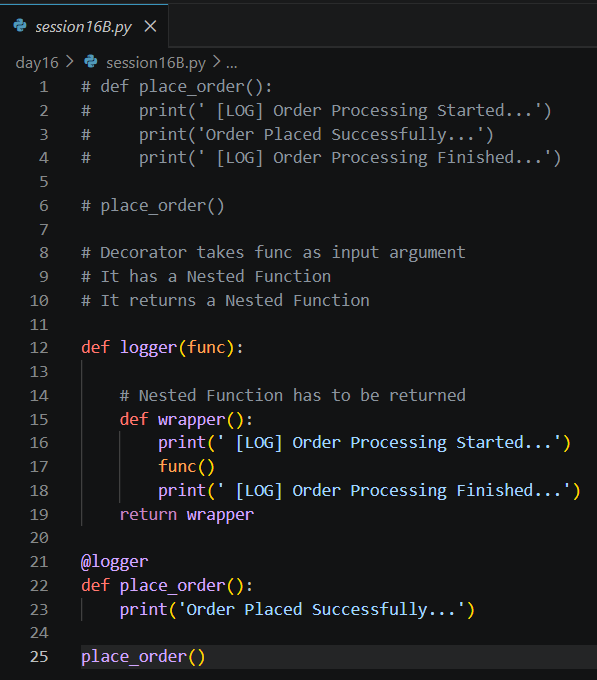
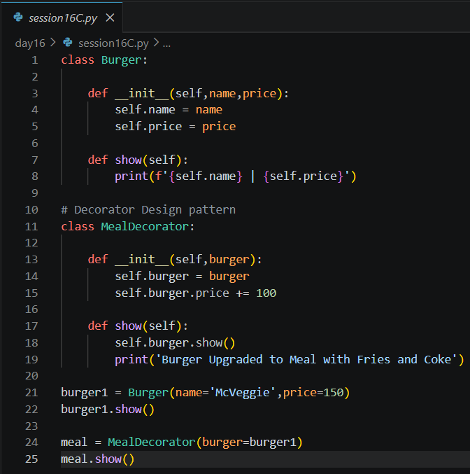
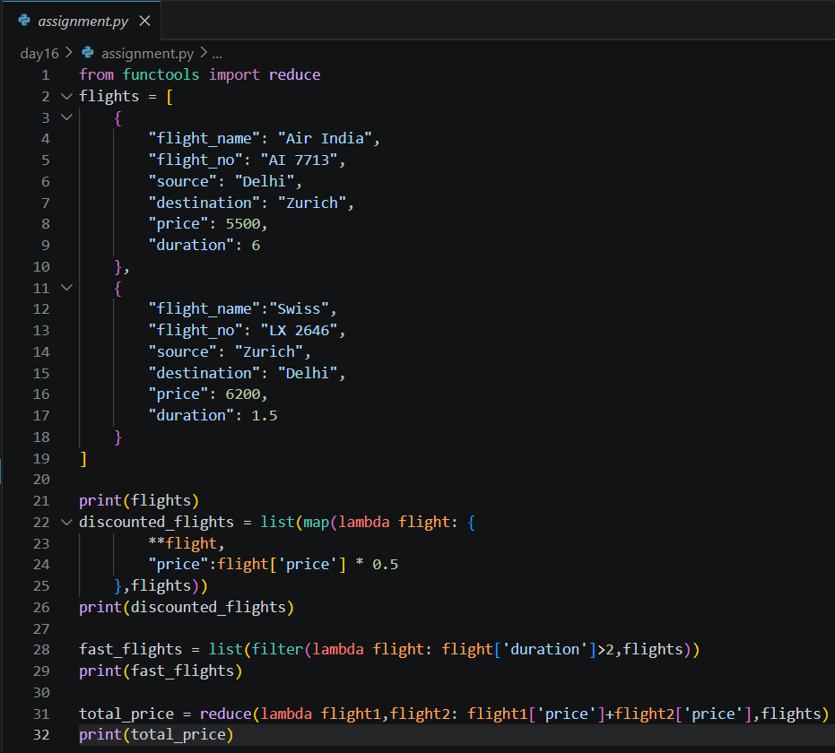

Date: 16th July 2026
Duration: 2 Hours
Training Company: Auribises Technologies
Trainer: Ishant Kumar
Day 16 focused on several advanced Python concepts that are commonly used in modern software development, data processing, and AI applications. We explored functional programming techniques using lambda functions and higher-order functions, understood how iterators and generators produce data efficiently, and learned two different applications of decorators. These concepts emphasized writing cleaner, reusable, and more efficient Python code.
The session also demonstrated how Python supports powerful programming paradigms beyond object-oriented programming, enabling developers to build modular, scalable, and maintainable applications.
The session began with an introduction to lambda functions, which provide a concise way to create anonymous
functions without defining them using the def keyword. We implemented simple examples for
calculating taxes, adding numbers, and computing the square of a value to understand how lambda expressions
simplify small reusable operations.
We also explored higher-order lambda functions by creating a discount generator that returned another function capable of applying different discount percentages. This demonstrated how Python functions can be passed around like variables and even returned from other functions.

The trainer introduced three important higher-order functions available in Python: map(), filter(), and reduce(). These functions allow operations to be applied across collections without writing explicit loops, resulting in shorter and more expressive code.
Through product pricing examples, we learned how map() transforms every element,
filter() selects elements that satisfy a condition, and reduce() combines multiple
values into a single result. These functions are widely used in data science, machine learning pipelines,
and backend development.

The next topic focused on Python iterators and generators. We learned how every iterable object internally
provides an iterator using the iter() function and how individual elements can be accessed
sequentially using next().
The trainer then introduced generators using the yield keyword. Unlike regular functions,
generators produce values one at a time, making them memory efficient for processing large datasets or
continuous streams of information.

The session introduced Python decorators as a technique for extending the behavior of existing functions without modifying their original implementation. We created a logging decorator that printed messages before and after the execution of a function, demonstrating how decorators can be used to add reusable functionality such as logging, authentication, performance monitoring, and exception handling.
Using the @decorator syntax made the implementation simple and highlighted how Python supports
clean separation between business logic and additional application features.

We also explored the Decorator Design Pattern from Object-Oriented Programming. Instead of modifying an existing object directly, a decorator class was used to extend the object's behavior. In the demonstration, a basic burger object was wrapped inside a meal decorator that upgraded it into a complete meal by adding fries and a soft drink while increasing its overall price.
This example illustrated how object behavior can be enhanced dynamically without changing the original class implementation, making applications more modular and extensible.

Throughout the session, we implemented several practical examples covering lambda functions, higher-order functions, iterators, generators, and decorators. These activities demonstrated different programming paradigms available in Python and showed how each technique contributes to writing cleaner, reusable, and efficient code.
The exercises reinforced the importance of functional programming concepts, especially when processing collections of data, creating reusable utilities, and optimizing memory usage through generators.
The assignment required applying functional programming concepts to a collection of flight records
represented as a list of dictionaries. Using map(), each flight's ticket price was discounted
by 50%. The filter() function was then used to identify flights satisfying a specified duration
condition, while reduce() calculated the combined ticket price of all available flights.
This assignment demonstrated how higher-order functions can efficiently process structured datasets without relying on traditional loops, making the implementation shorter, more readable, and easier to maintain.
I completed the assignment by applying lambda expressions together with map(),
filter(), and reduce() on a list of flight dictionaries. The solution generated a
discounted flight list while preserving the remaining flight information, filtered flights based on their
duration, and computed the total ticket price across all flights using reduction.
This exercise strengthened my understanding of functional programming techniques and demonstrated how these concepts can be applied to real-world data structures instead of simple numerical examples.

map(), filter(), and reduce() to process collections
efficiently.iter() and next() for sequential data traversal.yield keyword to produce values lazily and optimize memory
usage.Day 16 introduced several advanced Python concepts that initially appeared independent but were closely connected through the idea of writing cleaner and more reusable code. Learning lambda functions and higher-order functions helped me understand how complex operations can often be expressed with concise and readable code, especially when working with collections of data.
The concepts of iterators and generators were particularly interesting because they demonstrated how Python can process data efficiently without loading everything into memory at once. I also enjoyed learning about decorators, as they showed how additional functionality such as logging can be added to existing functions without changing their original implementation. The Decorator Design Pattern further illustrated how object-oriented programming supports extending object behavior while keeping the base classes unchanged.
The flight assignment provided an excellent opportunity to apply these concepts to structured data instead of simple numerical examples. Overall, this session strengthened my understanding of Python's functional programming capabilities and highlighted why these features are commonly used in production software, AI applications, and data engineering workflows.
The next session will continue expanding our Agentic AI development journey by introducing additional Python and AI concepts that will further enhance the capabilities of our intelligent applications and prepare us for building more sophisticated AI-powered systems.